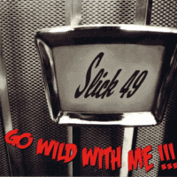

Slick 49 - Go Wild With Me (Album, 2010)
01 - Go Wild With Me (1:37)
02 - Got Rocking On My Mind (2:05)
03 - Cattin' Baby (2:08)
04 - The Stars Don't Look So Bright (2:44)
05 - Jumpin' Round (2:01)
06 - Prove You Wrong Do You Right (2:07)
07 - 41 Dodge (1:55)
08 - Riverside Jump (1:51)
09 - Shake 'Em Up Rock (2:22)
10 - Sweet Rockin' Baby (Tennessee) (2:06)
11 - Still I'm Gonna Love You (2:42)
12 - Don't Shoot Me Baby (2:06)
13 - All That's On My Mind (2:35)
14 - Tear This World Apart (3:05)
15 - Hot Headed Mama (2:06)
© The Western Star Recording Company :: [WSRC 045]
Notes
Review
319/366 (Project 366)
Wild tone of Rockabilly and Rock'n'Roll with overtones of authentic and revival sounds. I like this a bit lunatic way of singing and I really adore this smooth but strong guitars and bass accompaniment. Sounds so fine.